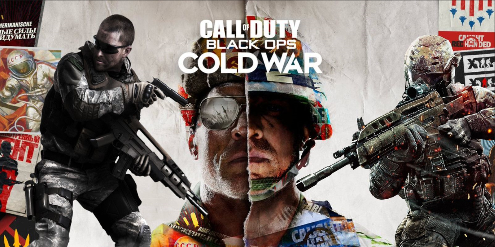
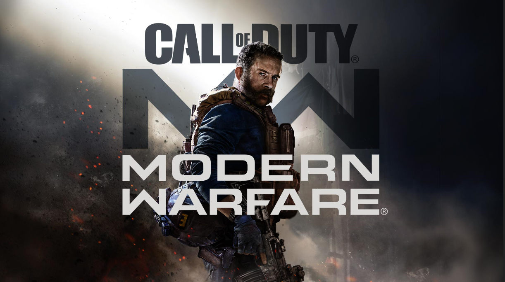

CALL of DUTY BLACK OPS COLD WAR is a FPS game developed by Treyarch and Raven Software stdios and will be released soon by Activision. This is the sixth part of the game's subtitle series "Black Ops" and the 17th major work of the "Call of Duty" series. As a direct sequel to "Call of Duty: Black Ops", it is scheduled to be released for Windoes, Playstation 4 and Xbox One platforms on November 13,2020. PlayStation 5 and Xbox Series X/S versions will be released later. The first announcement of the game was in the official trailer released on the YouTube channel on August 26, 2020. The multiplayer mode will be announced on September 9. "Black Ops Cold War" was set during the Cold War in the early 1980s. Before the election campaign, the CIA agent "Russell Adler" Russell Adler wanted to hunt down the so-called Soviet spy "Perseus" Perseus. Its stated goal was to subvert the United States and tilt the balance of power towards the Soviet Union.
Oct.10, 2020
Kaixuan Xu
Call of Duty: Black Ops Cold War

Call of Duty: Modern Warfare is a FPS game developed by Infinity Ward and published by Activision on PlayStation 4, Xbox One and Windows Platforms. This is the 16th main work in the "Call of Duty" series and the 4th work in the "Modern Warfare" series. But because it is a relaunch work, the plot is not to undertake the third part, so the name is still "Call of Duty: Modern Warfare" instead of "Call of Duty: Modern Warfare 4" The game announced its first trailer on May 30, 2019, and will be released globally on October 25, 2019. The game uses a brand new engine. Players will play the role of special forces in a series of turbulent missions, participate in a single-player plot campaign that affects the balance of power in the world, and perform top secret missions in European landmark cities and the Middle East. The game is made with a brand-new game engine and continues to be developed by Infinity Ward Studio, which produced "Call of Duty: Modern Warfare 3".
Oct.10, 2020
Kaixuan Xu